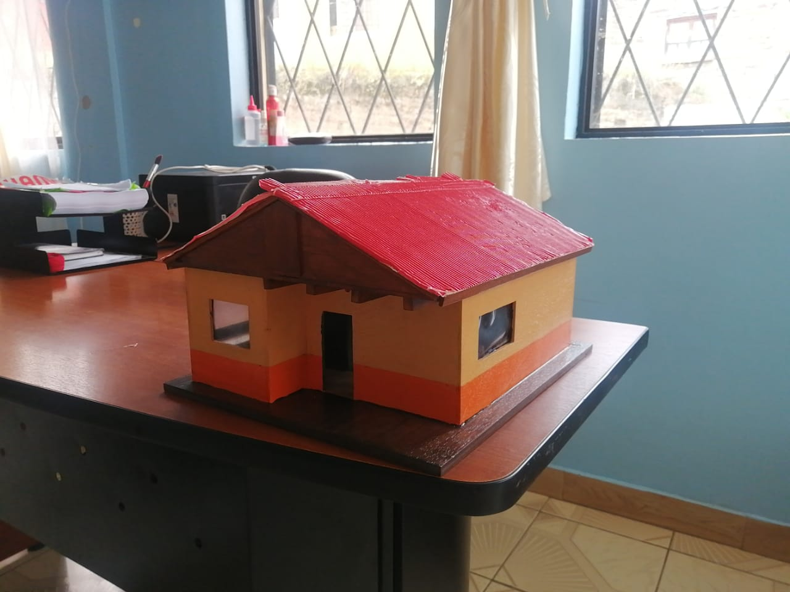

House with Technology
El proyecto íntermodular de nuestro grupo es una casa con tecnología, de ahí su nombre. Los materiales que usamos para llevar a cabo nuestro proyecto son: un protoboard de 600 puntos, diodos LED, Arduino Nano, módulo Bluetooth, cables para protoboard y cable para timbre.
Nuestro objetivo es impulsar a los jóvenes a hacer un uso correcto de las herramientas tecnológicas y facilitar el control y funcionamiento de estas a través de una conexión para controlarlas desde un teléfono celular.
